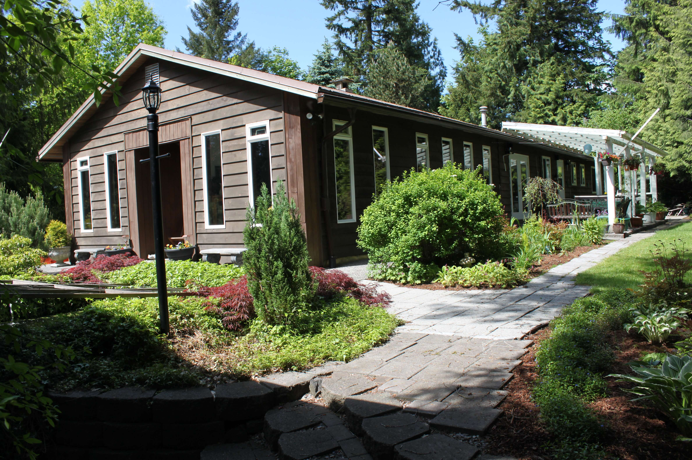

This is the country garden home where I grew up and gained a fountain of knowledge. My family and I did everything at this house, from gardening, and Landscaping to expanding the household. Here on this site I will talk about how we built and maintained this small country garden home. Please feel free to browse this site at your leisure.